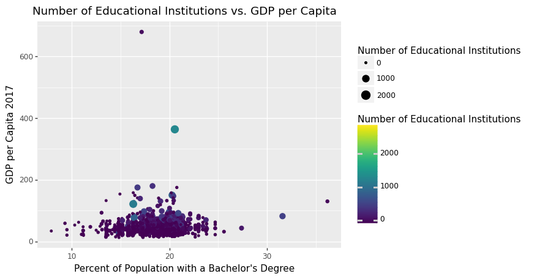

Education-Salary Trend since 1940: A Comprehensive Examination
In this research analysis, we will delve into the intriguing relationship between education and salary trends in the United States since 1940. By critically examining historical data and providing a small forecast for the next 10 years, we aim to shed light on the evolving dynamics of education and its impact on economic growth.
Historical Data Insights: Our analysis reveals a compelling incremental correlation between education and salary, with a particular focus on GDP per capita. Over the years, the GDP per capita has exhibited a consistent upward trajectory, albeit with noticeable slopes due to cyclical recessions. Notably, the effects of the 2008 financial crisis and the 2020 COVID-19 pandemic are particularly pronounced in the data.
To provide a clear visual representation of our findings, we have prepared several figures. In Fig. 1, we present a comprehensive overview of the US GDP per capita from the past to the projected 2020-2030 period. The impact of the COVID-19 year is clearly highlighted by a red line. Similarly, Fig. 2 showcases the percentage of college-educated individuals in the US over the years, also with a forecast for the 2020-2030 period.

Fig. 1: A first look at US GDP per capita over the years with a small forecast of the 2020-2030 period. COVID-19 year is marked by a red line.
Fig. 2: A first look at US College Percentage over the years with a small forecast of the 2020-2030 period. COVID-19 year is marked by a red line.
Examining the Correlation: While a correlation between education and economic growth is evident, we delve deeper to explore its strict nature. We pose essential questions: Is economic growth solely a common trend over time? How can we establish a causal relationship between the increase in economic prosperity and the percentage of college education? Furthermore, we investigate whether this trend is consistent across all states in the United States.
Fig. 3: College Percentage and GDP per capita (constant 2015 US$) and forecasts for the 2023-2033 period.
Understanding Fluctuations: In our examination of the data, we observe slight fluctuations in the GDP trend every few years, such as during the 1969-1979 period. While the cause of these fluctuations is not definitively established, we speculate on potential factors like cyclical recessions or external influences. To gain deeper insights, we would require additional data on specific events that lead to economic downturns.
National Level Analysis: Having verified the increase in both GDP and educational attainment at a national level over the years, we can affirm that these phenomena are undeniably positive. It is clear that there is a relationship between the two, as a wealthier country tends to exhibit a higher percentage of educated individuals.
Further Dimensions: While the national-level analysis provides valuable insights, our research does not end there. We are determined to cover additional points to broaden our understanding:
- Regional Analysis: Does this correlation appear consistently across all states in the US?
- Differential Effects: Does this trend vary based on racial demographics? We examine educational attainment and GDP per race to understand the potential "returns to education" for different counties based on their racial majority.
- Identifying Correlation Leaders: Which state exhibits the highest correlation between education and economic growth?
County-Level Analysis: Acknowledging the correlation, we further analyze the data at a county level, where the correlation coefficient is higher, indicating a stronger relationship between education and salary.
Results
Collection and Merging: To conduct our analysis, we utilized the Census API to retrieve education data. A detailed and coded explanation of this process can be found in the "Behind the Scenes" section. We merged data from three distinct datasets using the "GEO_ID" variable, a geographical identifier utilized by the census, ensuring a comprehensive and cohesive dataset.
Initial Findings: In Notebook 1, we focused on examining the relationship between Bachelor's degree attainment and GDP per capita among the counties of California. Additionally, we considered the number of educational institutions, spanning from kindergarten to universities, as a measure of investment in education by counties, states, and the US government.
Visual Representation of County-Level Data: The figure below presents a visual representation of the correlation between education and salary at the county level, specifically for California. Notably, the correlation coefficient stands at a remarkable 0.722, indicating a significant relationship between education and economic prosperity.
State-Level Trends:Transitioning to a state-level analysis, we observe that the correlation between education and salary is not as strong as at the county level. Fig. 5 provides an insightful visualization of the state-level trends, highlighting the nuances and potential reasons for the varying correlations.
For a detailed account of the methodology employed in generating these graphs and data analysis, please refer to the Behind the Scenes section.